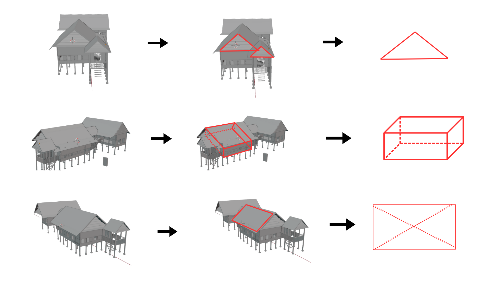

Berdasarkan visualisasi di atas, arsitektur Boyang dapat dianalisis melalui tiga tahapan abstraksi geometri (dari bentuk nyata ke bentuk matematika):
Pada baris pertama gambar, tampak depan atap rumah (bagian Tumbaq Layar) diabstraksikan menjadi bangun datar Segitiga Sama Kaki. Garis putus-putus vertikal di tengah segitiga menunjukkan sumbu simetri atau garis tinggi. Hal ini membuktikan bahwa arsitektur Mandar sangat memperhatikan prinsip keseimbangan (simetri bilateral), di mana beban atap didistribusikan secara merata ke sisi kiri dan kanan.
Pada baris kedua, badan utama rumah (area hunian atau Lawayang) diproyeksikan sebagai bangun ruang tiga dimensi, yaitu Balok atau Prisma Segi Empat. Garis merah mempertegas volume ruang, sementara garis putus-putus menunjukkan rusuk yang tidak terlihat (hidden lines). Ini menggambarkan konsep ruang fungsional pada rumah panggung yang berbentuk kotak memanjang untuk memaksimalkan sirkulasi udara.
Pada baris ketiga, salah satu sisi bidang atap diisolasi menjadi bangun datar Persegi Panjang. Dua garis putus-putus yang bersilangan adalah garis diagonal. Titik temu kedua diagonal ini seringkali menjadi titik pusat berat bidang tersebut. Dalam konstruksi, pemahaman tentang diagonal ini penting untuk menjaga kekakuan (rigiditas) struktur rangka atap agar tidak mudah miring atau roboh.